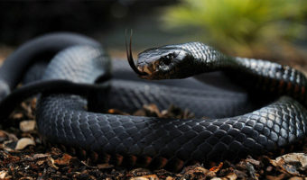
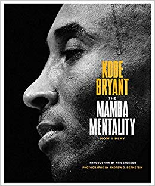

What is a Black Mamba?
A black mamba is a species of extremely venomous snake. It is the second longest
venomous snake species in the world, but despite it's size it is very quick and
is capable of moving at 4.32 to 5.4 m/s (16-20km/h).

How Does It Relate To Kobe?
Kobe gave himself the nickname of "Black Mamba" as a way to deal with hardships
he was facing at the time. He used it as another personality, "Kobe" would handle
personal challenges and "The Black Mamba" would handle things on the basketball court.
The nickname ultimately stuck as the name accurately described his on the court
playstyle and his mindset, often referred to as the "mamba mentality". The idea
of always giving it your all, having the competitive drive to motivate you to always
improve oneself and put in the work needed to achieve your goals so when the time comes
you can trust on the work you've put in and take advantage of the opportunity in front of you.
The mentality of consistent work and pushing through boundaries and playing through injury and
never giving up, never falling, just continuing to push through.
Mamba Academy
The "mamba mentality" has spread and people often follow this mindset when pursuing their goals.
In 2018, Kobe co-founded the
Mamba Sports Academy, a facilty he hopes will help other unlock
their full potential.